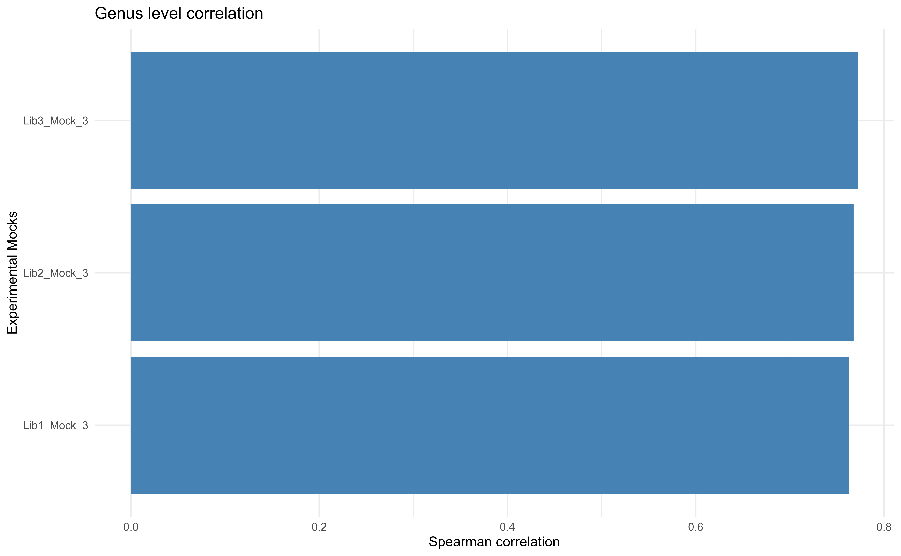
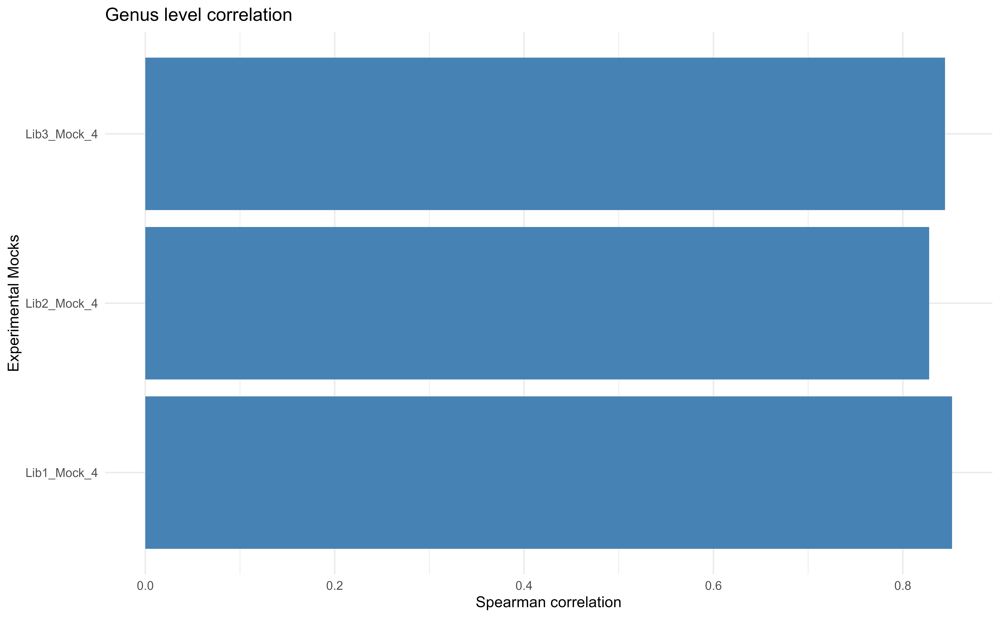

In this examples, the step to work with custom mock communities is
demonstrated.
The test data used in this example are from Ramiro-Garcia J, Hermes GDA,
Giatsis C et al. NG-Tax, a highly
accurate and validated pipeline for analysis of 16S rRNA amplicons from
complex biomes F1000Research 2018, 5:1791 [version 2; peer review: 2
approved, 1 approved with reservations, 1 not approved].
How to prepare a custom training set for
DECIPHER::IdTaxa?
These are from the DECIPHER
package.
Library
# Following packages are required
library(chkMocks)
library(DECIPHER)
library(microbiome)
library(dplyr)
library(corrr)
library(Biostrings)
library(reshape2)Read the fasta file with 16S rRNA gene sequences for taxa in mock community.
# db <- "../MIBMocks/MIBPhylotypes.fasta" # path of custom fasta sequences
# Here example is store in the package.
db <- system.file("extdata", "MIBPhylotypes.fasta",
package="chkMocks", mustWork = TRUE)Convert to DNAStringSet.
seqs <- Biostrings::readDNAStringSet(db)
#> Warning in .Call2("fasta_index", filexp_list, nrec, skip, seek.first.rec, :
#> reading FASTA file C:/Users/shettys/AppData/Local/R/win-library/4.2/chkMocks/
#> extdata/MIBPhylotypes.fasta: ignored 2 invalid one-letter sequence codes
seqs <- DECIPHER::OrientNucleotides(seqs)
#> ========================================================================================================================================================================================================
#>
#> Time difference of 0.08 secs
# check first 2 as example
names(seqs)[1:2]
#> [1] "Bacteria;Actinobacteria;Actinobacteria;Actinomycetales;Nocardiaceae;Rhodococcus;Rhodococcus.1_PT;"
#> [2] "Bacteria;Actinobacteria;Actinobacteria;Actinomycetales;Micrococcaceae;Micrococcus;Micrococcus.2_PT;"Now, adding the dummy seq name before > and adding a ‘Root’ before Bacteria;Phylum;etc;
# here, adding the dummy seq name before > and adding a 'Root' before Bacteria;Phylum;etc;
names(seqs) <- paste0("MIB", seq(1:length(names(seqs))), " ", "Root;" ,names(seqs))
# check first 2 as example
names(seqs)[1:2]
#> [1] "MIB1 Root;Bacteria;Actinobacteria;Actinobacteria;Actinomycetales;Nocardiaceae;Rhodococcus;Rhodococcus.1_PT;"
#> [2] "MIB2 Root;Bacteria;Actinobacteria;Actinobacteria;Actinomycetales;Micrococcaceae;Micrococcus;Micrococcus.2_PT;"We show how to check for problematic taxonomies. However, it will most likely be not required if input fasta is formatted correctly.
groups <- names(seqs) # sequence names
groups <- gsub("(.*)(Root;)", "\\2", groups)
groupCounts <- table(groups)
u_groups <- names(groupCounts)
length(u_groups)
maxGroupSize <- 10 # max sequences per label (>= 1)
remove <- logical(length(seqs))Create a training set.
maxIterations <- 3
allowGroupRemoval <- FALSE
probSeqsPrev <- integer()
for (i in which(groupCounts > maxGroupSize)) {
index <- which(groups==u_groups[i])
keep <- sample(length(index),
maxGroupSize)
remove[index[-keep]] <- TRUE
}
sum(remove)
taxid <- NULL
for (i in seq_len(maxIterations)) {
cat("Training iteration: ", i, "\n", sep="")
# train the classifier
MIBTrainingSet <- LearnTaxa(seqs[!remove],
names(seqs)[!remove],
taxid)
# look for problem sequences
probSeqs <- MIBTrainingSet$problemSequences$Index
if (length(probSeqs)==0) {
cat("No problem sequences remaining.\n")
break
} else if (length(probSeqs)==length(probSeqsPrev) &&
all(probSeqsPrev==probSeqs)) {
cat("Iterations converged.\n")
break
}
if (i==maxIterations)
break
probSeqsPrev <- probSeqs
# remove any problem sequences
index <- which(!remove)[probSeqs]
remove[index] <- TRUE # remove all problem sequences
if (!allowGroupRemoval) {
# replace any removed groups
missing <- !(u_groups %in% groups[!remove])
missing <- u_groups[missing]
if (length(missing) > 0) {
index <- index[groups[index] %in% missing]
remove[index] <- FALSE # don't remove
}
}
}Check any problems.
# saveRDS(MIBTrainingSet, "inst/extdata/MIBTrainingSet.rds")
# Here MIBTrainingSet is stored in the package to reduce time for example.
# Read data from package
MIBTrainingSet <- system.file("extdata", "MIBTrainingSet.rds",
package="chkMocks", mustWork = TRUE)
#path for file
MIBTrainingSet <- readRDS(MIBTrainingSet)Check training set.
plot(MIBTrainingSet)
Check training set.
# Problem seqs in reference?
MIBTrainingSet$problemSequences
#> Index
#> 1 16
#> Expected
#> 1 Root;Bacteria;Bacteroidetes;Bacteroidia;Bacteroidales;Bacteroidaceae;Bacteroides;Bacteroides.16_PT;
#> Predicted
#> 1 Root;Bacteria;Bacteroidetes;Bacteroidia;Bacteroidales;Bacteroidaceae;Bacteroides;Bacteroides.11_PT;
# Which is the problem group
MIBTrainingSet$problemGroups
#> [1] "Root;Bacteria;Bacteroidetes;Bacteroidia;Bacteroidales;Bacteroidaceae;Bacteroides;"Bacteroides seqs are highlighted here. These are common
gut inhabitants. Closely related Bacteroides can be
difficult to assign taxonomy at lowere levels.
There is N in some of the reference sequences and
therefore it is highlighted.
Create theoretical Phyloseq
Get theoretical Composition MIBMocks
# mck.otu.th.path <- read.csv("../MIBMocks/TheoreticalCompositionMIBMocks.csv")
# Here example is store in the package.
mck.otu.th.path <- system.file("extdata", "TheoreticalCompositionMIBMocks.csv",
package="chkMocks", mustWork = TRUE)
mck.otu <- read.csv(mck.otu.th.path)
head(mck.otu)
#> Species MC3 MC4
#> 1 Rhodococcus.1_PT 1.16 0.001
#> 2 Micrococcus.2_PT 1.16 0.010
#> 3 Bifidobacterium.3_PT 1.16 0.100
#> 4 Bifidobacterium.4_PT 1.16 2.490
#> 5 Bifidobacterium.5_PT 1.16 0.000
#> 6 Bifidobacterium.6_PT 1.16 0.000The table above has theoretical composition.
# make Species col as rownames
rownames(mck.otu) <- mck.otu$Species
# Remove first col `Species` and convert it to a matrix
mck.otu <- mck.otu[,-1] %>% as.matrix()
head(mck.otu)
#> MC3 MC4
#> Rhodococcus.1_PT 1.16 0.001
#> Micrococcus.2_PT 1.16 0.010
#> Bifidobacterium.3_PT 1.16 0.100
#> Bifidobacterium.4_PT 1.16 2.490
#> Bifidobacterium.5_PT 1.16 0.000
#> Bifidobacterium.6_PT 1.16 0.000The matrix above can be convert to otu_table later.
Now create a dummy sample_data table.
# SampleType here is label that should match one of your columns in sample_data in experimental samples phyloseq object.
mck.sam <- data.frame(row.names = c(colnames(mck.otu)),
SampleType = c("MyMockTheoretical","MyMockTheoretical")) %>%
sample_data()
mck.sam
#> SampleType
#> MC3 MyMockTheoretical
#> MC4 MyMockTheoreticalGet the taxonomy for mock phylotype.
# mck.taxonomy.th.path <- read.csv("../MIBMocks/TaxonomyMIBMocks.csv")
# Here example is store in the package.
mck.taxonomy.th.path <- system.file("extdata", "TaxonomyMIBMocks.csv",
package="chkMocks", mustWork = TRUE)
mck.tax <- read.csv(mck.taxonomy.th.path)
head(mck.tax)
#> Domain Phylum Class Order Family
#> 1 Bacteria Actinobacteria Actinobacteria Actinomycetales Nocardiaceae
#> 2 Bacteria Actinobacteria Actinobacteria Actinomycetales Micrococcaceae
#> 3 Bacteria Actinobacteria Actinobacteria Bifidobacteriales Bifidobacteriaceae
#> 4 Bacteria Actinobacteria Actinobacteria Bifidobacteriales Bifidobacteriaceae
#> 5 Bacteria Actinobacteria Actinobacteria Bifidobacteriales Bifidobacteriaceae
#> 6 Bacteria Actinobacteria Actinobacteria Bifidobacteriales Bifidobacteriaceae
#> Genus Species
#> 1 Rhodococcus Rhodococcus.1_PT
#> 2 Micrococcus Micrococcus.2_PT
#> 3 Bifidobacterium Bifidobacterium.3_PT
#> 4 Bifidobacterium Bifidobacterium.4_PT
#> 5 Bifidobacterium Bifidobacterium.5_PT
#> 6 Bifidobacterium Bifidobacterium.6_PT
rownames(mck.tax) <- mck.tax$Species
mck.tax <- mck.tax[,-1] %>% as.matrix()
head(mck.tax)
#> Phylum Class Order
#> Rhodococcus.1_PT "Actinobacteria" "Actinobacteria" "Actinomycetales"
#> Micrococcus.2_PT "Actinobacteria" "Actinobacteria" "Actinomycetales"
#> Bifidobacterium.3_PT "Actinobacteria" "Actinobacteria" "Bifidobacteriales"
#> Bifidobacterium.4_PT "Actinobacteria" "Actinobacteria" "Bifidobacteriales"
#> Bifidobacterium.5_PT "Actinobacteria" "Actinobacteria" "Bifidobacteriales"
#> Bifidobacterium.6_PT "Actinobacteria" "Actinobacteria" "Bifidobacteriales"
#> Family Genus
#> Rhodococcus.1_PT "Nocardiaceae" "Rhodococcus"
#> Micrococcus.2_PT "Micrococcaceae" "Micrococcus"
#> Bifidobacterium.3_PT "Bifidobacteriaceae" "Bifidobacterium"
#> Bifidobacterium.4_PT "Bifidobacteriaceae" "Bifidobacterium"
#> Bifidobacterium.5_PT "Bifidobacteriaceae" "Bifidobacterium"
#> Bifidobacterium.6_PT "Bifidobacteriaceae" "Bifidobacterium"
#> Species
#> Rhodococcus.1_PT "Rhodococcus.1_PT"
#> Micrococcus.2_PT "Micrococcus.2_PT"
#> Bifidobacterium.3_PT "Bifidobacterium.3_PT"
#> Bifidobacterium.4_PT "Bifidobacterium.4_PT"
#> Bifidobacterium.5_PT "Bifidobacterium.5_PT"
#> Bifidobacterium.6_PT "Bifidobacterium.6_PT"This is will be our tax_table
Build a phyloseq object of theoretical composition
ps.th <- phyloseq(otu_table(mck.otu, taxa_are_rows = T),
sample_data(mck.sam),
tax_table(mck.tax))
ps.th
#> phyloseq-class experiment-level object
#> otu_table() OTU Table: [ 55 taxa and 2 samples ]
#> sample_data() Sample Data: [ 2 samples by 1 sample variables ]
#> tax_table() Taxonomy Table: [ 55 taxa by 6 taxonomic ranks ]The MIB mock contain 55 phylotypes. There are two types of mocks viz., MC3 and MC4
sample_names(ps.th)
#> [1] "MC3" "MC4"Check composition of theoretical
ps.th.genus <- microbiome::aggregate_taxa(ps.th, "Genus")
plot_composition(ps.th.genus) +
theme_minimal() +
theme(legend.position="right",
legend.key.size=unit(0.2,'cm'),
legend.text = element_text(face = "italic")) +
guides(col = guide_legend(ncol = 2))These are not very useful to visualize with barplots. Too many genera!
microbiome::plot_composition(ps.th.genus, plot.type = "heatmap") +
scale_fill_viridis_c("Abudance (%)") +
theme(axis.text = element_text(hjust = 1),
axis.text.y = element_text(face = "italic")) +
coord_flip()
#> Scale for 'fill' is already present. Adding another scale for 'fill', which
#> will replace the existing scale.
New experiment
# Here example is store in the package.
ps.mib.w <- system.file("extdata", "ps.mib.rds",
package="chkMocks", mustWork = TRUE)
#path for file
ps.mib.w <- readRDS(ps.mib.w)
# taxa names are ASV seqs. Check first 2 names/ASV seqs
taxa_names(ps.mib.w)[1:2]
#> [1] "GTGTAACGCCTCCGAAGAGTCGCATGCTTTCACATGTTGTTCATTACATGTCAAGCCCAGGTAAGGTTCTTCGCGTTGCATCGAATTAAGCCACATACTCCACCGCTTGTGCGGGTCCCCNNNNNNNNNNCTTTGAGTTTTAATCTTGCGACCGTACTCCCCAGGCGGCACGCTTAACGCGTTAGCTCCGGCACGCAGGGGGTCGATTCCCCGCACACCAAGCGTGCACCGTTTACTGCCAGGACTACAG"
#> [2] "CTGTAGTCCTGGCAGTAAACGGTGCACGCTTGGTGTGCGGGGAATCGACCCCCTGCGTGCCGGAGCTAACGCGTTAAGCGTGCCGCCTGGGGAGTACGGTCGCAAGATTAAAACTCAAAGNNNNNNNNNNGGGGACCCGCACAAGCGGTGGAGTATGTGGCTTAATTCGATGCAACGCGAAGAACCTTACCTGGGCTTGACATGTAATGAACAACATGTGAAAGCATGCGACTCTTCGGAGGCGTTACAC"Assign custom taxonomy
ps.mib <- assignTaxonomyCustomMock(ps.mib.w, # experimental mock community phyloseq
mock_db = MIBTrainingSet, # custome training set
processors = NULL,
threshold = 60,
strand = "top",
verbose = FALSE)
#> Warning: Expected 8 pieces. Missing pieces filled with `NA` in 1362 rows [1, 3,
#> 5, 7, 8, 12, 14, 15, 16, 18, 19, 20, 21, 22, 24, 26, 27, 28, 29, 30, ...].Aggregate to species
ps.mib <- aggregate_taxa(ps.mib, "species")
taxa_names(ps.mib)
#> [1] "Micrococcus.2_PT"
#> [2] "Rhodococcus.1_PT"
#> [3] "Bifidobacterium.10_PT"
#> [4] "Bifidobacterium.4_PT"
#> [5] "Bifidobacterium.5_PT"
#> [6] "Bifidobacterium.6_PT"
#> [7] "Bifidobacterium.8_PT"
#> [8] "unclassified_Bifidobacterium"
#> [9] "Bacteroides.12_PT"
#> [10] "Bacteroides.13_PT"
#> [11] "Bacteroides.14_PT"
#> [12] "Bacteroides.15_PT"
#> [13] "unclassified_Bacteroides"
#> [14] "Parabacteroides.17_PT"
#> [15] "Prevotella.18_PT"
#> [16] "Alistipes.19_PT"
#> [17] "Bacillus.20_PT"
#> [18] "Bacillus.21_PT"
#> [19] "unclassified_Bacillus"
#> [20] "Granulicatella.22_PT"
#> [21] "Enterococcus.23_PT"
#> [22] "Lactobacillus.24_PT"
#> [23] "Lactobacillus.25_PT"
#> [24] "Lactobacillus.26_PT"
#> [25] "unclassified_Lactobacillus"
#> [26] "Lactococcus.27_PT"
#> [27] "Streptococcus.28_PT"
#> [28] "Streptococcus.29_PT"
#> [29] "unclassified_Streptococcus"
#> [30] "Clostridium sensu stricto.30_PT"
#> [31] "Anaerostipes.31_PT"
#> [32] "Blautia.32_PT"
#> [33] "Dorea.33_PT"
#> [34] "Lachnospiracea_incertae_sedis.34_PT"
#> [35] "Lachnospiracea_incertae_sedis.35_PT"
#> [36] "Lachnospiracea_incertae_sedis.36_PT"
#> [37] "unclassified_Lachnospiracea_incertae_sedis"
#> [38] "Roseburia.37_PT"
#> [39] "Ruminococcus2.38_PT"
#> [40] "Clostridium XI.39_PT"
#> [41] "Clostridium IV.40_PT"
#> [42] "Faecalibacterium.41_PT"
#> [43] "Veillonella.42_PT"
#> [44] "Fusobacterium.43_PT"
#> [45] "Victivallis.44_PT"
#> [46] "Enterobacter.46_PT"
#> [47] "unclassified_Enterobacter"
#> [48] "Escherichia/Shigella.49_PT"
#> [49] "Klebsiella.50_PT"
#> [50] "Salmonella.51_PT"
#> [51] "Serratia.52_PT"
#> [52] "Pseudomonas.53_PT"
#> [53] "Pseudomonas.54_PT"
#> [54] "unclassified_Pseudomonas"
#> [55] "Akkermansia.55_PT"
#> [56] "Unknown"
# convert to relative abundance
ps.mib <- microbiome::transform(ps.mib, "compositional")Merge with theoretical
# There is one sampe here
phyloseq::sample_data(ps.th)$MockType <- "Theoretical"
# adding new column to ps.mck.nw.tax may be for other comparisons user might be interested in doing.
phyloseq::sample_data(ps.mib)$MockType <- "Experimental"
ps.custom <- merge_phyloseq(ps.mib, ps.th)Compare the experimental mocks with theoretical mocks 3
compare2theorectical(ps.custom, theoretical_id = "MC3")
#> # A tibble: 7 × 2
#> term MC3
#> <chr> <dbl>
#> 1 Lib1_Mock_3 0.392
#> 2 Lib1_Mock_4 -0.0818
#> 3 Lib2_Mock_3 0.409
#> 4 Lib2_Mock_4 -0.0304
#> 5 Lib3_Mock_3 0.404
#> 6 Lib3_Mock_4 -0.0441
#> 7 MC4 0.342Visualize
cor.table.ref <-compare2theorectical(ps.custom, theoretical = NULL) %>%
corrr::focus(MC3)
#> Check that theoretical = exists in sample_names(x)
#> returning all pairwise comparisons
cor.table.ref %>%
reshape2::melt() %>%
# Remove MC4 theoretical and experimental and keep only those with MC3
dplyr::filter(!term %in% c("Lib1_Mock_4", "Lib2_Mock_4", "Lib3_Mock_4", "MC4") &
variable == "MC3") %>%
ggplot(aes(value,term)) +
geom_col(fill="steelblue") +
theme_minimal() +
#facet_grid(~variable) +
ylab("Experimental Mocks") +
xlab("Spearman's correlation") +
ggtitle("Species level correlation") +
scale_x_continuous()
#> Using term as id variables
This is an example where one can observe that in high diversity mocks with some closely related “species”, the assignments based on short reads is difficult. The correlation values are less than 0.5.
Aggregate to Genus
It is well known that the Genus level assignments with short reads is better than “species” level assignments. Therefore, we can check the correlation at genus level.
ps.custom.gen <- microbiome::aggregate_taxa(ps.custom, "genus")
compare2theorectical(ps.custom.gen, theoretical_id = "MC3")
#> # A tibble: 7 × 2
#> term MC3
#> <chr> <dbl>
#> 1 Lib1_Mock_3 0.762
#> 2 Lib1_Mock_4 -0.00491
#> 3 Lib2_Mock_3 0.768
#> 4 Lib2_Mock_4 -0.0541
#> 5 Lib3_Mock_3 0.772
#> 6 Lib3_Mock_4 -0.0353
#> 7 MC4 0.0756Compare the values for MC3
cor.table.ref <-compare2theorectical(ps.custom.gen, theoretical = NULL) %>%
corrr::focus(MC3)
#> Check that theoretical = exists in sample_names(x)
#> returning all pairwise comparisons
cor.table.ref %>%
reshape2::melt() %>%
# Remove MC4 theoretical and experimental and keep only those with MC3
dplyr::filter(!term %in% c("Lib1_Mock_4", "Lib2_Mock_4", "Lib3_Mock_4", "MC4") &
variable == "MC3") %>%
ggplot(aes(value,term)) +
geom_col(fill="steelblue") +
theme_minimal() +
#facet_grid(~variable) +
ylab("Experimental Mocks") +
xlab("Spearman correlation") +
#scale_fill_viridis_c() +
ggtitle("Genus level correlation") +
scale_x_continuous()
#> Using term as id variables
Compare the values for MC4
cor.table.ref <-compare2theorectical(ps.custom.gen, theoretical = NULL) %>%
corrr::focus(MC4)
#> Check that theoretical = exists in sample_names(x)
#> returning all pairwise comparisons
cor.table.ref %>%
reshape2::melt() %>%
# Remove MC4 theoretical and experimental and keep only those with MC3
dplyr::filter(!term %in% c("Lib1_Mock_3", "Lib2_Mock_3", "Lib3_Mock_3", "MC3") &
variable == "MC4") %>%
ggplot(aes(value,term)) +
geom_col(fill="steelblue") +
theme_minimal() +
#facet_grid(~variable) +
ylab("Experimental Mocks") +
xlab("Spearman correlation") +
#scale_fill_viridis_c() +
ggtitle("Genus level correlation") +
scale_x_continuous()
#> Using term as id variables
There is a major improvement in correlation between theoretical and expected mock communities.
devtools::session_info()